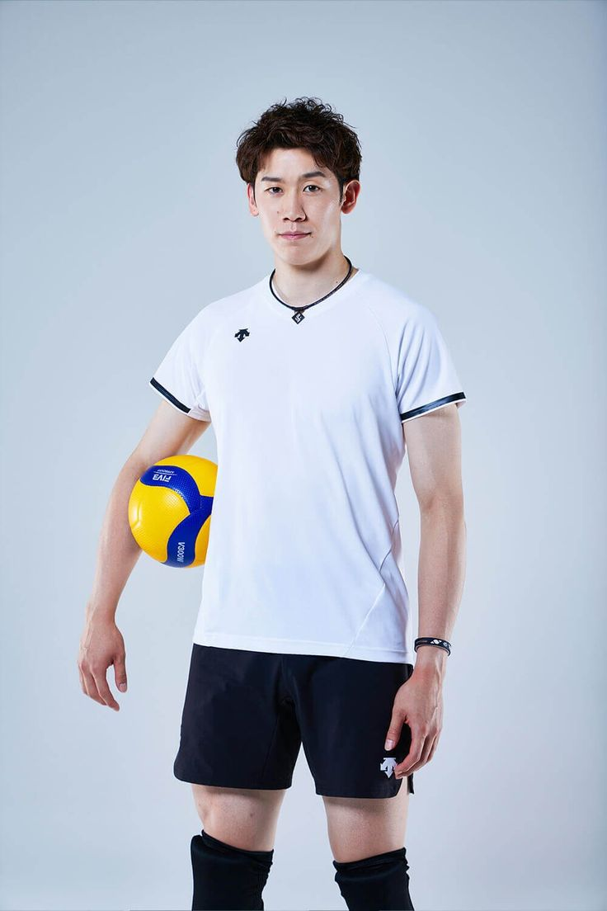
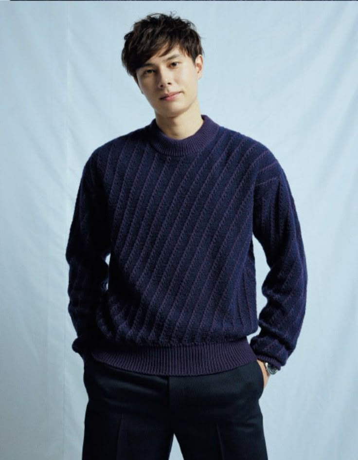
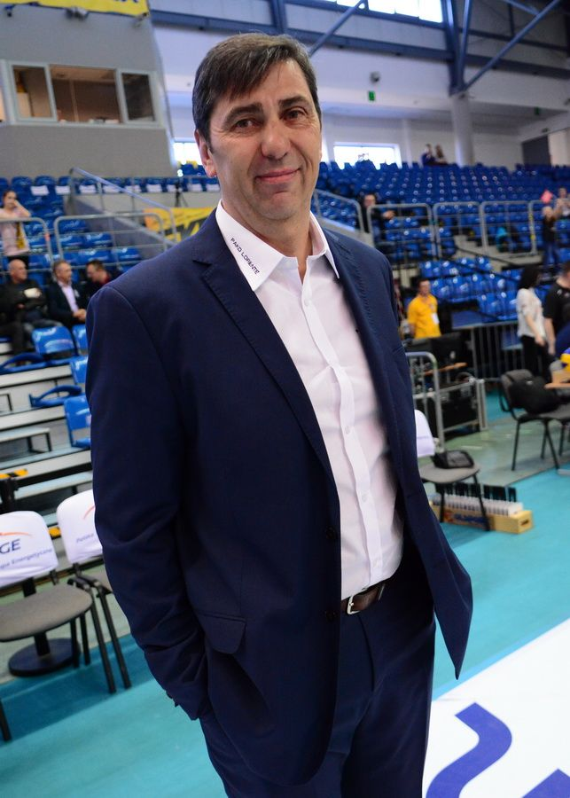

RYUJIN NIPPON - JAPAN NATIONAL TEAM PROFILE
FIVB WORLD RANKING
4PLAYING STYLE
The Japan Men’s National Volleyball team, known as Ryujin Nippon, stands out through their extraordinary floor defense and lightning-fast offensive transitions. Rather than relying on sheer height, they dominate the court with technical precision, exceptional agility, and a "scrappy" defensive mindset that makes the ball nearly impossible to ground. By combining aggressive tactical serving with creative, high-tempo combination plays, they consistently outmaneuver taller opponents, proving that speed and discipline can overcome physical disadvantages.
KEY PLAYERS - THE BIG THREE

YUKI ISHIKAWA

YUJI NISHIDA

RAN TAKAHASHI
HEAD COACH

PHILLIPPE BLAIN
DATE OF BIRTH: 20 MAY 1960 (65 YEARS OLD)
HEIGHT: 193 CM | FROM: FRANCE
OTHER PLAYERS
1. MASAHIRO SEKITA (SETTER)
2. TAKAHIRO OHNO (MIDDLE BLOCKER)
3. TAISHI ONODERA (MIDDLE BLOCKER)
4. KENTARO TAKAHASHI (MIDDLE BLOCKER)
5. TOMOHIRO YAMAMOTO (LIBERO)
6. KENTO MIYAURA (OPPOSITE SPIKER)